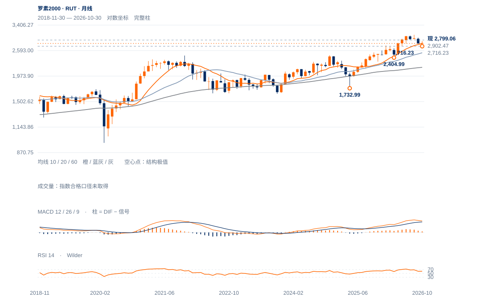

领先受检验
未来1—5日先看2797—2811拉锯；2832未重夺前，12日急回吐仍限制修复延伸。
未来1—5日先看2797—2811拉锯；2832未重夺前，12日急回吐仍限制修复延伸。
未来2—6周以2721—2875拉锯为主。先回收2811—2832，再完成2875.14原两日条件；若反抽再受阻，2716—2721可能继续受检验。
未来1—3个月偏向长期扩张后的整理。守住2716并周收重返2902，才提高再试3069.71判断；连续两周收低2716将把风险下移至2534中期月度均衡，而非继续用相对领先支持偏多。

展开图表 ↗2022低1641.47与2025年4月1732.99构成长期承接，2026年3月2404.99明显抬高；8月3069.71大高后回落。10月月收2811.84仍高于20月均衡2533.81，当前2799.06靠近10月均衡2798.26。大结构较2022—2025区间改善，眼下却在长期均衡与上方供应之间。
7月2902.47低区已被跌破，10月2716.23、11月2721.00暂时形成近邻承接。两谷接近只构成候选，2875.14原上沿未确认且12日急跌回吐，不能宣布筑底完成。相对纳指领先与绝对价格低于200日均线并存。
2716—2721形成局部同价承接候选，2875.14上沿未确认。近期相对领先仍需转化为绝对价格保持。
20日涨1.15%，相对纳指比值升6.52%，但现收2799.06低于200日线2811.17及50日2828.00。相对优势尚未越过绝对结构门槛。
12日跌1.66%，收盘位置6.2%，跌回11日低2832.42下方；11日2832—2852的高位停留没有保持。
11月4日高2875.14与6日低2721.00仍包围现价；截至6日完整周收2754.11也低于10/30周均线。ER20仅0.050，仍以反复路径为主。
先回收2811—2832；原2875.14连续两日收盘确认仍为升级门槛。
日收低于2787.12先削弱反弹；原2721.00日收条件不下移。
两个低区没有继续降低，长期20月均衡也仍在上移；若2875突破并回测保持，当前低效率区间可能成为延续整理。
| 周期 | 最后完整柱 | 图示柱数 | RSI14 | ATR14 | MACD柱 |
|---|---|---|---|---|---|
| 日线 | 2026-11-12 | 185 | 48.5505 | 46.75155 | 5.14332 |
| 周线 | 2026-11-06 | 156 | 43.17533 | 92.6135 | -34.87039 |
| 月线 | 2026-10-30 | 96 | 61.50236 | 192.17525 | 17.79172 |
美股价格拆股调整、不含分红再投资。完整周线至11月6日；11月进行中。指数成交量与全成分广度受限。